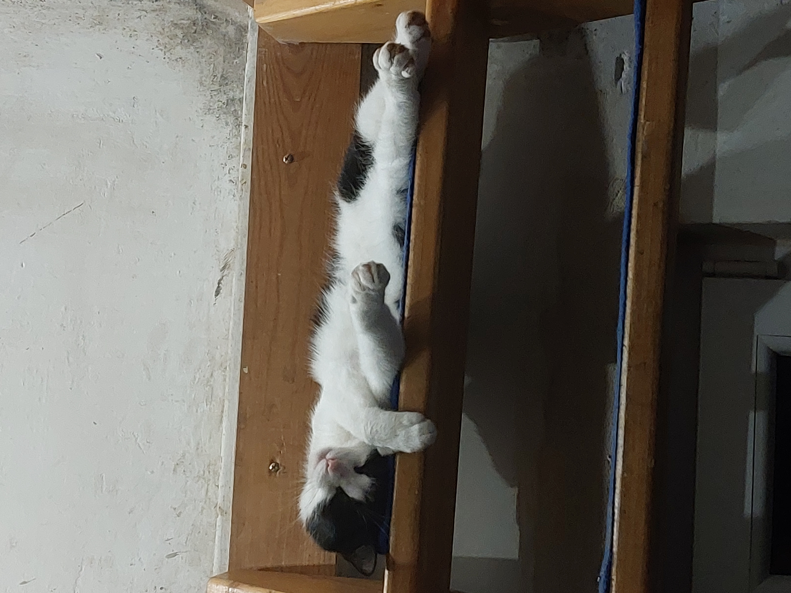
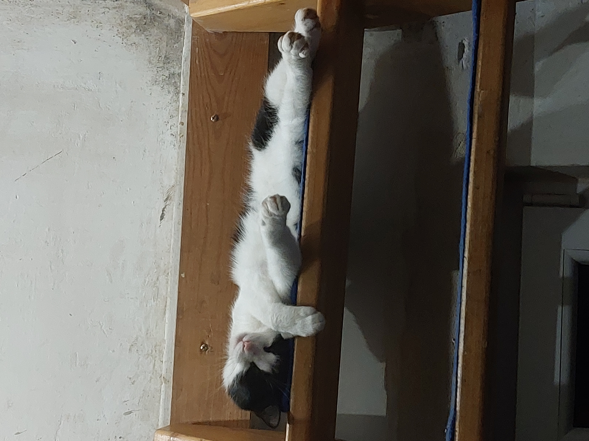
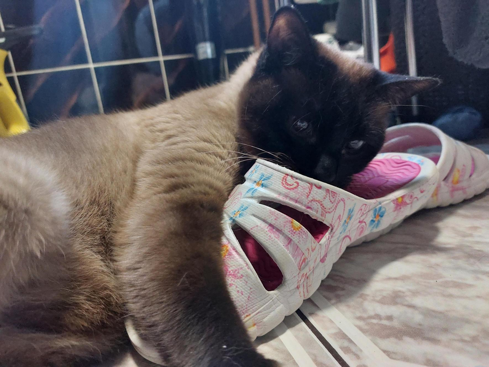
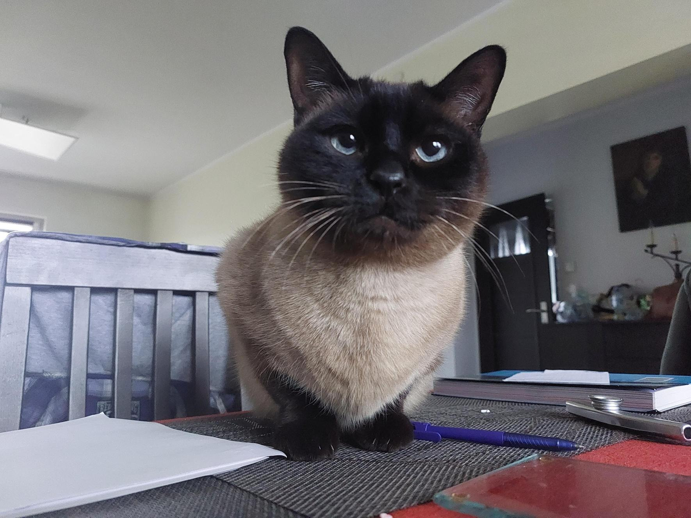
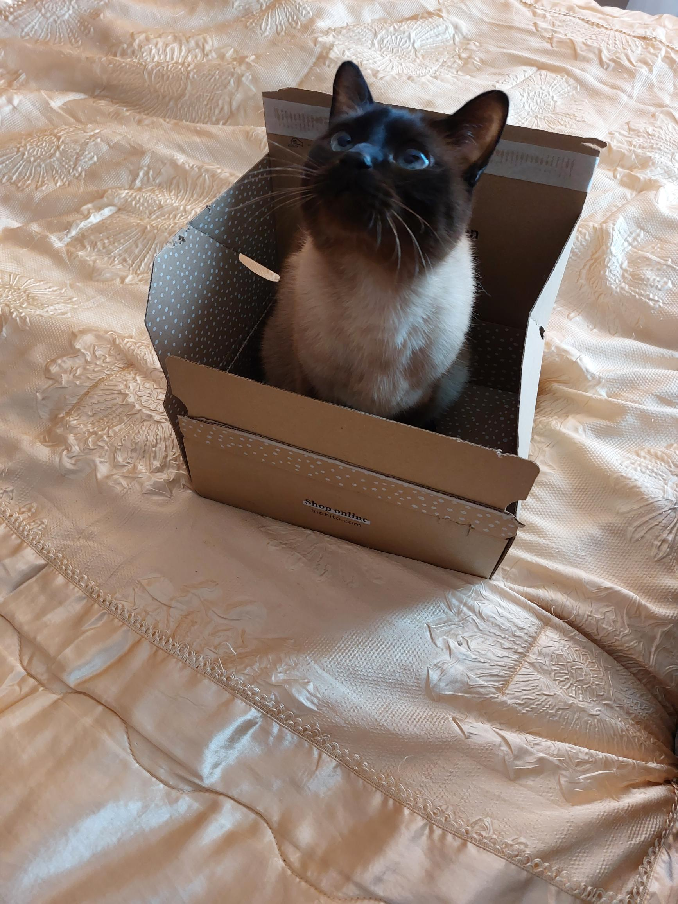
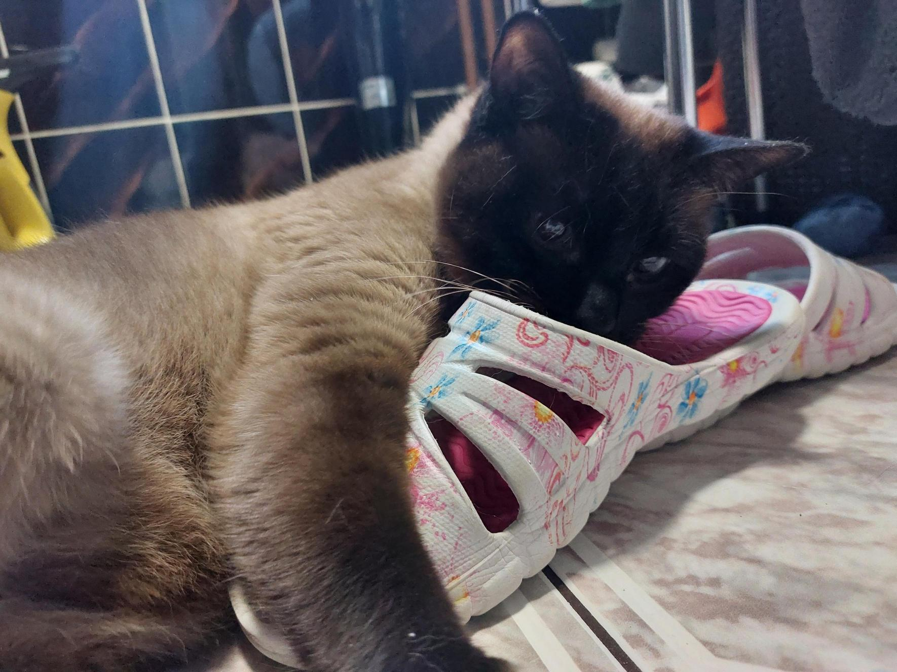
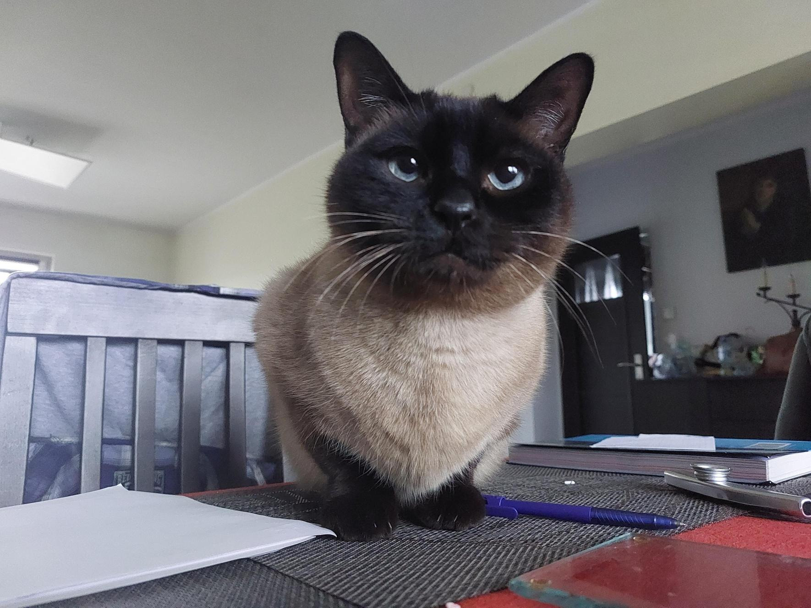
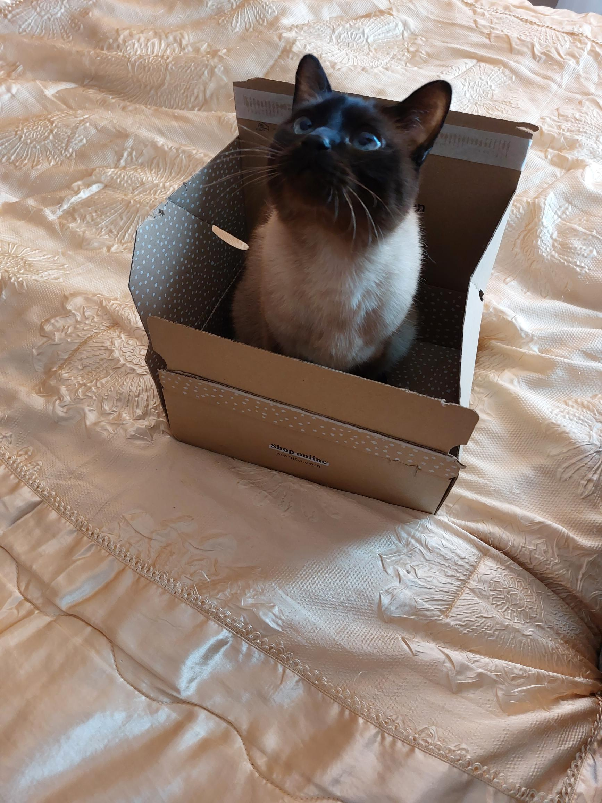

There are many reasons these days why cats are the best animal, these are the reasons why (source)
1. CATS ARE QUIET
If noise levels are a concern in your living situation, cats are a great choice of pet. Even the quietest bark will likely be much louder than the most insistent meowing. Depending on the cat, you may need to worry about other sounds such as them knocking things off of surfaces or running around at top speed, but they are still likely to be more quiet overall.
2. CATS ARE LOW MAINTENANCE
Compared to dogs, cats are a low maintenance pet. They don’t require formal training, they don’t need to be taken out multiple times a day, and they’re even able to take care of basic self-cleaning. Of course, long-haired cats will still require regular grooming, but it will likely involve less regular grooming than long-haired dogs.
3. CATS ARE EASY TO HOUSE-TRAIN
One of the biggest challenges dog owners need to overcome is the process of house-training a new puppy. Kittens, on the other hand, usually know how to use the litter box as soon as you bring them home. All you need to do is show them where it is, and they’ll instinctively use it.
4. CATS MAKE GREAT APARTMENT PETS
When it comes to pets in apartments, cats are often better suited than dogs. Compared to dogs, cats require less space and can take better advantage of vertical space. Even in apartments with small square footage, you can make the space comfortable for cats by adding different vertical levels. Plus, since they use litter boxes, they don’t need to be taken outside multiple times a day – something that can be time-consuming if you live in a large apartment building.
5. CATS COST LESS TO CARE FOR
According to the ASPCA, the overall cost of caring for cats is lower than medium or large dogs. This is because they require less food, fewer toys, and have lower overall grooming costs.
Of course these are only 5 of the millions of reasons why cats are signifcantly better than any other animal in the world annd there are far more than just 5. They are some of the cutest animals in the world of course obviously. Just look here at those photos we have got of them!!!

 

 




